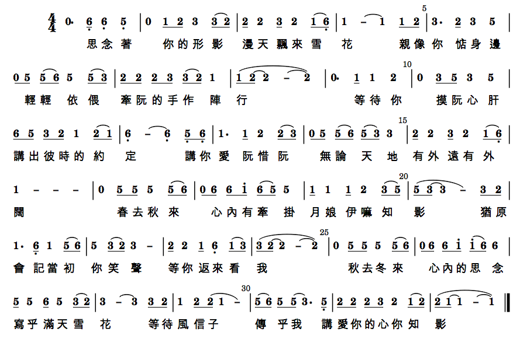

輸入碼：
q1 \mp s3 s5 s1' s3' s2' s7 q1' q7 4 q6 q5 7, q6 q5 1
q1 s3 s5 s1' s3' s2' s7 q1' q7 4 q6 q5 q4 q7, 1. s3 s5
q1' q1' q1' q1' 7. s2 s4 q6 q6 q6 q6 5. q0
輸入碼：
q1 \mp s3 s5 q1'. sb7 ~ sb7 s6 s4 s#4 5
測試結果：升降記號未顯示，音樂 OK
待解問題：升降記號應正常顯示 (已解決，點開以下 pdf 檔即可看到，解法請見 問題 0001)
[.ly]
[.pdf]
[.midi]
輸入碼：
q2 q3 1 q2 q3 1 q2 q3 5 q5 q6 1 q6, q1 2 q2 q1 6, q6, q1 q2 q3 q2 q1 2 q3 q2 1 q2 q3 1 q2 q3 5 q5 q6 1 q6, q1 2 q2 q1 6, q6, q1 1 - -
L: 這 些 年 一 個 人 風 也 過 雨 也 走 有 過 淚 有 過 錯 還 記 得 堅 持 什 麼 真 愛 過 才 會 懂 會 寂 寞 會 回 首 終 有 夢 終 有 你 在 心 中
測試結果：音符歌詞對齊 OK
待解問題：
後續發展：2015 年 8 月 22 日測試，以「不完全小節」呈現。
輸入碼（僅加上「4/4,4 」）：
4/4,4 q2 q3 1 q2 q3 1 q2 q3 5 q5 q6 1 q6, q1 2 q2 q1 6, q6, q1 q2 q3 q2 q1 2 q3 q2 1 q2 q3 1 q2 q3 5 q5 q6 1 q6, q1 2 q2 q1 6, q6, q1 1 - ~ 1
L: 這 些 年 一 個 人 風 也 過 雨 也 走 有 過 淚 有 過 錯 還 記 得 堅 持 什 麼 真 愛 過 才 會 懂 會 寂 寞 會 回 首 終 有 夢 終 有 你 在 心 中
完整版（全曲簡譜丶歌詞丶五線譜）
[.ly]
[.pdf]
[.png]
[.midi]
輸入碼：
5 q5 q6 5 q3 q2 3 q3 q2 1. s2 ( s3 ) q2. s1 6,. s6, s6, q1 q3 2 - ~ 2 0 5 q5 q6 5 q3 q2 3 q3 q2 1. s2 ( s3 ) q2. s1 6,. s3 s2 q3 q2 1 - ~ 1 0 1' q2' ( q1' ) 7 q6 q5 6 q6 ( q5 ) 3. s3 s3 q4. q4. q1' 7 s6 q7. 5 - ~ 5 0 1' q2' ( q1' ) 7 q6 q5 6 q6 ( q5 ) 3. s1 s1 q2. q2. q6 5 q3 q2 1 - ~ 1 0 7. q7 7 q3 q7 1'. q7 6 - q7. q7. q7 7 s3 q7. 1' - ~ 1' q0 q6 6. q6 q6 q6 q5 q4 5 - ~ 5 q0 q6 6. q1' 5 q3 q2 1 - ~ 1 0
H:紅 紅 的 花 開 滿 了 木 棉 道 長 長 的 街 好 像 在 燃 燒 沈 沈 的 夜 徘 徊 在 木 棉 道 輕 輕 的 風 吹 過 了 樹 梢 木 棉 道 我 怎 能 忘 了 那 是 去 年 夏 天 的 高 潮 木 棉 道 我 怎 能 忘 了 那 是 夢 裏 難 忘 的 波 濤 啊 愛 情 就 像 木 棉 道 季 節 過 去 就 謝 了 愛 情 就 像 那 木 棉 道 蟬 聲 綿 綿 斷 不 了
測試結果：OK，簡譜的三拍以兩拍加一拍的連音表示，五線譜直接顯示兩拍加附點（附點二分音符）
待解問題：簡譜也能如五線譜一樣，以附點二分音符表示。
[.ly]
[.pdf]
[.midi]
輸入碼：
4/4,4 q5, q1 R{ 3. q5 3 q3 q2 q1 q1 q1 q6, 5, q5, q1 3. q5 q5 q5 q6 q5 q5 q3 q2 q1 2 q6 q5 3. q5 q5 q5 q6 q5 q3 q2 q1 q2 6, q5, q6, 1. q3 2 3 } A{ 1 - ~ 1 q5, q1 | 1 - ~ 1 q3 q5 } 1'. q1' 7 q6 q5 q6 q1' q3 q2 1 q1 q1 q1 1' q6 q5 q3 q2 q1 2 - ~ 2 q3 q5 1'. q1' 7 q6 q5 q6 q1' q3 q2 1 q1 q1 q1 1' q6 q5 q3 q2 q1 1 - ~ 1 DC q3 q5 1'. q1' 7 q6 q5 q6 q1' q3 q2 1 q1 q1 q1 1' q6 q5 q3 q2 q1 1 - ~ 1 Fine
L: 每 一 次 都 在 徘 徊 孤 單 中 堅 強 每 一 次 就 算 很 受 傷 也 不 閃 淚 光 我 知 道 我 一 直 有 雙 隱 形 的 翅 膀 帶 我 飛 飛 過 絕 望 不 去
L: 不 去 想 他 們 擁 有 美 麗 的 太 陽 我 看 見 每 天 的 夕 陽 也 會 有 變 化 我 知 道 我 一 直 有 雙 隱 形 的 翅 膀 帶 我 飛 給 我 希 望 我 終 於 看 到 所 有 夢 想 都 開 花 追 逐 的 年 輕 歌 聲 多 嘹 亮 我 終 於 翱 翔 用 心 凝 望 不 害 怕 哪 裡 會 有 風 就 飛 多 遠 吧 隱 形 的 翅 膀 讓 夢 恆 久 比 天 長 留 一 個 願 望 讓 自 己 想 像
測試結果：呈現反覆記號及兩段歌詞，DC al Fine 也 ok。
待解問題：（問題八）反覆 R{} A{1|2} 只能用一次，不用出現兩次。
[.ly]
[.pdf (jl5)]
[.midi]
輸入碼：
略，請直接用 .ly 檔進行測試
測試結果：ok，這次把轉音都給「寫」出來，有點兒彆扭。
[.ly]
[.pdf]
[.midi]
[單曲網頁]
(演唱版，要用 #C 調演奏)
(演奏版，用 C 調演奏)

輸入碼：
5, q1. s1 q1. ( s7, ) 1 5, q2. s2 q2. ( s#1 ) 2
5, 3 q3. s#2 q3. s4 q3 ( q1 ) q2 ( q3 ) q2. s2 q2 ( q1 )
7,. q5, 5 5 3 1 2 1 q3. ( s2 ) 2 q1. ( s7, ) q1 q2 q3 ( q2 ) q3 ( q4 ) 5 -
5 - 6 q6. s6 q5. ( s6 ) q5 ( q4 ) 3 ( 2 ) 1 - 1. q7, 6, 6, 6, #5,
6, 7, q1. s7, q2. ( s7, ) 3 - 2. q2 2 2 3 4 3 2 q3. s1 q2. ( s3 )
6, - q5,. s5, q5,. s5, 1. q5, 3. q1 5. q1 2 -
q1. ( s2 ) q3 ( q4 ) q5. ( s6 ) q5 ( q4 ) 3 - ~ 3 2 1 - ~ 1 0
L: 凌 雲 御 風 去 報 國 把 志 伸 遨 遊 崑 崙 上 空 俯 瞰 太 平 洋 濱 看 五 嶽 三 江 雄 關 要 塞 美 麗 的 錦 繡 河 山 輝 映 著 無 敵 機 群 緬 懷 先 烈 莫 辜 負 創 業 艱 辛 發 揚 光 大 尤 賴 我 空 軍 軍 人 同 志 們 努 力 努 力 矢 勇 矢 勤 國 祚 皇 皇 萬 世 榮
L: 盡 瘁 為 空 軍 報 國 把 志 伸 那 怕 風 霜 雨 露 只 信 雙 手 萬 能 看 鐵 翼 蔽 空 馬 達 齊 鳴 美 麗 的 錦 繡 河 山 輝 映 著 無 敵 機 群 我 們 要 使 技 術 發 明 日 日 新 我 們 要 用 血 汗 永 固 中 華 魂 同 志 們 努 力 努 力 同 德 同 心 國 祚 皇 皇 萬 世 榮
| 編號 | 問題內容 | 登錄日期 | 狀態、嘗試及結果 |
|---|---|---|---|
| 0001 | 升降記號無法呈現，音樂部份 ok | 20150510 | (20150815) 已解決。請看 PDF。 將 jianpu-ly.py %%\remove Staff_symbol_engraver 那行 (第 106 行) uncomment (移掉 %%) 即可 |
| 0002 | 三拍應改為二分音符加附點 | 20150712 | (20150815) 待解決，先以「暫行方案」處理。 暫行方案：以 2 + 1（兩拍加一拍）替代，如《木棉道》 |
| 0003 | 不需要開頭的 4/4 | 20150712 |
(20150815) 待解決。 還沒開始想，但一直想做出 4/4 拍以外的曲子（如 3/4）及不完全小節，却始終不成。需再了解程式碼。 (20150829) 已可做出不完全小節，請看測試三的後續發展。 |
| 0004 | 不需要小節編號 | 20150712 | (20150815) 待解決。 還沒開始想，但留著也無妨 |
| 0005 | 隨心所欲的斷句 | 20150712 | (20150815) 待解決。 還沒開始想，想改成隨歌詞斷句，當然，是手動設定。 |
| 0006 | 歌詞搭簡譜，有音高及音長 | 20150712 | (20150815) 暫不解決。 目前已能做出簡譜搭歌詞，有音高及音長，就是不能任意斷句，即前一個問題 (0005) |
| 0007 | 譜和音樂均可隨選轉調 | 20150712 | (20150815) 待解決。 將用 web page，以 html + javascript 的方式轉碼成 lilypond，目前只有想法，尚無能力 |
| 0008 | 輸入檔之反覆 R{} A{1|2} 只能用一次 | 20150830 | (20150830) 待解決。 歌曲通常都會有同一段旋律搭兩段歌詞，樂譜以反覆配兩段歌詞的方式呈現，例如測試五《隱形的翅膀》，仔結看譜可發現有兩處可用「反覆記號」處理，但譜上只有一處，原因是簡譜輸入檔無法再用 R{} A{1|2} 做第二處的反覆。 |